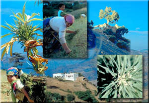

Il reportage che trovate su questo sito, è il resoconto di viaggio di un fotografo professionista, appassionato di Africa e di motocicletta.
Per una buona comprensione leggere prima il testo visualizzandone i 5 paragrafi, cliccando qui a lato.
Le immagini sono visibili sia dal menu a lato che dal paragrafo 4, nel qual caso si vedono + strettamente legate al testo.
Per una caratteristica di programmazione, dalle pagine delle foto si torna al capitolo 4 cliccando sull'immagine.